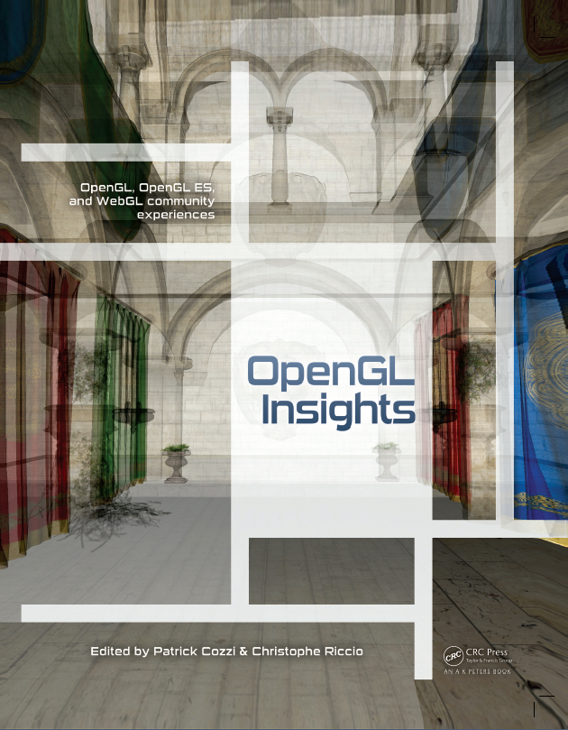

| Cover | Table of Contents | Pipeline Map | OpenGL Tips | Contributors | Reviews | Code | BibTeX | Errata | Blog |
|
The OpenGL Insights cover highlights work from Chapter 20, Efficient Layered Fragment Buffer Techniques, by Pyarelal Knowles, Geoff Leach, and Fabio Zambetta in a Mondrian composition. It was chosen because the technique uses order independent transparency, and we believe that OpenGL Insights provides more transparency to OpenGL programming, making the design a perfect embodiment. FrontBack |